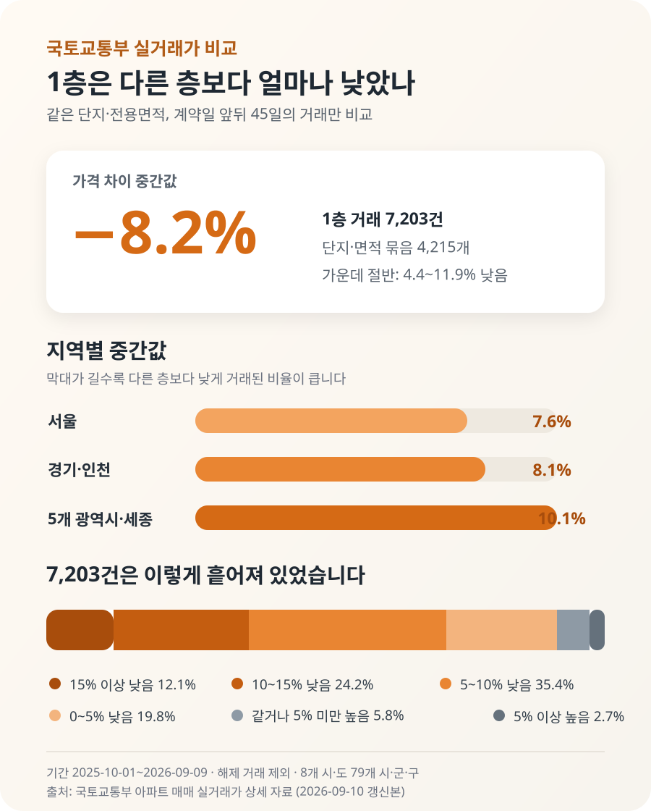

아파트 1층은 정말 10% 쌀까? 실거래 7,203건을 비교했습니다
조건을 맞춰 비교한 1층 실거래 7,203건의 가격 차이 중간값은 다른 층보다 8.2% 낮았습니다. 그러나 ‘1층은 무조건 10% 싸야 한다’는 규칙은 아닙니다. 표본의 중간 절반은 4.4~11.9% 낮은 구간에 있었고, 오히려 다른 층보다 비싼 거래도 7.6%였습니다. 내 앞에 나온 매물은 최근 같은 단지·같은 면적 거래로 다시 계산하고, 그 가격 차이가 사생활·채광·습기 같은 집별 조건을 감수할 만큼 충분한지 따져봐야 합니다.
중간값은 8.2% 낮았지만, 10%가 정답은 아니었습니다
집을 보다가 1층만 유난히 싸게 나온 매물을 만나면 두 생각이 함께 듭니다. “예산을 아낄 기회일까?”와 “나중에 팔 때도 계속 싼 집일까?”입니다. 인터넷에서는 5%, 10%, 수천만원처럼 여러 숫자가 나오지만 단지가 다르고 계약 시점도 다른 거래를 한데 섞으면 내 매물과 비교하기 어렵습니다.
그래서 톺다는 2025년 10월 1일부터 2026년 9월 9일까지 신고된 아파트 매매 자료 가운데 같은 단지, 전용면적, 계약일 조건을 맞출 수 있는 거래만 골랐습니다. 1층 거래 한 건마다 계약일 앞뒤 45일 안에 같은 단지·같은 전용면적의 2층 이상 거래가 세 건 이상 있을 때만 비교했습니다.
그 결과 비교 가능한 1층 거래는 7,203건이었고, 다른 층 거래금액의 중간값보다 얼마나 낮거나 높은지를 계산한 결과의 중간값은 －8.2%였습니다. 낮은 쪽부터 늘어놓았을 때 가운데 절반은 －11.9%에서 －4.4% 사이였습니다. 한 숫자만 적용하기보다 대략 4~12% 안에서도 실제 거래가 넓게 갈렸다고 읽는 편이 맞습니다.

단지가 아니라 ‘1층 거래 한 건’마다 비교 대상을 찾았습니다
예를 들어 A아파트 전용 84.9㎡ 1층이 2026년 6월 15일에 거래됐다면, A아파트 전용 84.9㎡ 가운데 5월 1일부터 7월 30일까지 계약된 2층 이상 거래를 찾습니다. 비교 거래가 세 건 이상일 때 그 금액의 중간값을 구하고, 1층 가격이 몇 % 낮거나 높은지 계산했습니다. 계약일이 멀리 떨어진 작년 거래나 면적이 다른 거래는 비교 대상에서 뺐습니다.
서울·경기·인천과 부산·대구·대전·울산·세종의 일부 지역을 다룬 자료이므로 전국 모든 아파트를 대표하는 통계는 아닙니다. 비교 가능한 표본이 많은 단지가 전체 결과에 더 자주 들어가는 영향도 있습니다. 이를 확인하려고 같은 단지·면적 묶음 4,215개를 각각 한 번씩 반영해 다시 계산했더니 중간값은 －8.0%였습니다. 7,203건을 그대로 센 결과인 －8.2%와 큰 차이는 없었습니다.
다른 층이 8억원이라면 중간값 차이는 약 6,600만원입니다
비율만 보면 체감하기 어려우니 다른 층의 가까운 시기 거래금액 중간값이 8억원이라고 가정해 보겠습니다. 이번 분석의 중간값인 8.2%를 단순히 적용하면 1층은 약 7억 3,400만원, 차이는 약 6,600만원입니다.
| 이번 표본의 위치 | 다른 층 8억원 대비 | 단순 환산한 1층 가격 | 금액 차이 |
|---|---|---|---|
| 차이가 작은 쪽 25% | 4.4% 낮음 | 약 7억 6,400만원 | 약 3,600만원 |
| 중간값 | 8.2% 낮음 | 약 7억 3,400만원 | 약 6,600만원 |
| 차이가 큰 쪽 25% | 11.9% 낮음 | 약 7억 500만원 | 약 9,500만원 |
이 표는 퍼센트를 돈으로 바꿔 본 예시입니다. “8억원짜리 단지의 1층 적정가는 7억 3,400만원”이라는 뜻이 아닙니다. 같은 단지에서 1층 거래가 드물거나 2층 이상 거래가 특정 동에 몰렸다면 실제 협상 범위는 달라질 수 있습니다. 먼저 내 단지 거래를 다시 찾고, 표의 숫자는 비교 결과가 지나치게 동떨어지지 않았는지 보는 데만 쓰세요.
서울은 7.6%, 경기·인천은 8.1% 낮았습니다
지역을 나눠도 1층 가격이 낮은 흐름은 이어졌지만 차이는 같지 않았습니다. 서울 표본의 중간값은 －7.6%, 경기·인천은 －8.1%, 부산·대구·대전·울산·세종 표본은 －10.1%였습니다. 아래 숫자는 도시의 서열이 아니라 해당 기간에 비교 조건을 통과한 거래의 결과입니다.
| 지역 묶음 | 비교한 1층 거래 | 가격 차이 중간값 | 가운데 절반의 범위 |
|---|---|---|---|
| 서울 | 1,651건 | 7.6% 낮음 | 4.2~10.9% 낮음 |
| 경기·인천 | 4,731건 | 8.1% 낮음 | 4.4~11.9% 낮음 |
| 부산·대구·대전·울산·세종 | 821건 | 10.1% 낮음 | 5.8~14.1% 낮음 |
면적별로는 전용 60㎡ 이하가 8.8%, 60㎡ 초과 85㎡ 이하가 7.8%, 85㎡ 초과가 6.9% 낮았습니다. 다만 면적이 커질수록 표본은 줄었습니다. 특히 85㎡ 초과는 562건이어서 “큰 집일수록 1층 차이가 작다”는 일반 법칙으로 해석하면 안 됩니다.
1층이 다른 층보다 비싼 거래도 7.6%였습니다
7,203건 가운데 91.5%는 비교한 다른 층의 중간값보다 낮았고, 0.9%는 같았으며, 7.6%는 오히려 높았습니다. 1층이 싸게 거래되는 경우가 많았지만 예외가 드물다고만 하기도 어려운 숫자입니다.
그 이유를 공개 실거래 자료만으로 단정할 수는 없습니다. 같은 1층이라도 단지에 따라 지면보다 높게 배치되거나 전용정원이 있을 수 있고, 동·향·조망과 수리 상태도 다릅니다. 반대로 계약일이 비슷해도 급매 여부와 잔금 조건은 공개된 숫자만으로 알 수 없습니다. 가격이 높았다는 결과와 그 원인을 구분해야 임의 추정을 피할 수 있습니다.
따라서 중개사에게 “1층인데 왜 더 비싸죠?”라고 묻기 전에 비교표를 보여 달라고 하세요. 같은 전용면적의 최근 거래가 어느 동인지, 1층 매물에 별도 정원이나 높은 기단 같은 차이가 있는지, 내부 수리 상태가 같은지를 하나씩 확인하면 설명이 숫자와 맞는지 판단하기 쉬워집니다.
내가 본 매물은 최근 거래 3건부터 다시 계산하세요
내 매물에 이번 전체 중간값 8.2%를 바로 곱하지 말고, 먼저 톺다 실거래가 조회나 국토교통부 실거래가 공개시스템에서 같은 단지·같은 전용면적을 찾습니다. 신고일이 아니라 계약일을 보고, 가능하면 앞뒤 1~2개월 안의 2층 이상 거래를 세 건 이상 모으세요.
예를 들어 다른 층 거래가 7억 8천만원, 8억원, 8억 2천만원이라면 중간값은 8억원입니다. 내가 본 1층이 7억 3,500만원이라면 가격 차이는 다음과 같습니다.
8.1%는 이번 전체 표본의 중간값과 비슷합니다. 그렇다고 바로 계약할 단계는 아닙니다. 비교 거래가 남향이고 매물은 북향이거나, 비교 거래는 수리된 집이고 매물은 수리가 필요하다면 층 외의 차이가 섞여 있습니다. 반대로 1층에 독립된 테라스가 포함됐다면 단순 할인율만으로 비교하기 어렵습니다.
창 앞을 먼저 보고, 집 안은 채광과 습기 흔적을 확인하세요
1층을 처음 보러 간 사람은 내부 인테리어부터 보기 쉽습니다. 하지만 바꾸기 어려운 것은 창 밖 환경과 건물 배치입니다. 현관에 들어가기 전에 해당 동을 한 바퀴 돌아 창 앞에 무엇이 있는지부터 보세요. 낮에 괜찮아 보여도 퇴근 시간이나 주말에는 보행량과 소음이 달라질 수 있으니 계약 전 다른 시간대에 한 번 더 확인하는 편이 좋습니다.
| 확인할 곳 | 현장에서 볼 것 | 왜 가격 비교에 필요한가 |
|---|---|---|
| 거실·방 창 앞 | 산책로, 벤치, 놀이터, 출입구, 재활용장, 주차 동선과 창 사이 거리 | 사람의 시선과 생활소음은 같은 1층에서도 크게 다를 수 있음 |
| 실제 높이 | 창 바닥과 외부 지면의 높이, 필로티·반지하 주차장 위 배치 여부 | 공개자료의 ‘1층’만으로 체감 높이를 알 수 없음 |
| 채광 | 창 앞 동·나무의 가림, 거실과 방에 실제로 빛이 드는 시간 | 향만 같아도 동 간격과 조경에 따라 결과가 달라짐 |
| 벽·바닥 | 가구 뒤, 외벽 모서리, 창틀 주변의 변색·곰팡이·들뜸·냄새 | 보이는 마감보다 반복된 습기 흔적이 수리비와 생활 불편에 직접 연결됨 |
| 창호·보안 | 방충망, 잠금장치, 방범창·센서, 커튼을 열었을 때 실내 노출 | 입주 뒤 보완할 비용과 평소 환기 가능성을 가늠할 수 있음 |
| 관리 이력 | 공용 배관·외벽 보수 이력, 같은 동 1층의 반복 민원 여부를 관리사무소에 문의 | 한 세대 방문만으로 확인하기 어려운 문제를 보완함 |
어린 자녀 때문에 1층을 찾는다면 “아래층이 없으니 마음껏 뛰어도 된다”는 말만 믿지는 마세요. 바닥 충격음은 구조를 따라 옆집이나 위층에도 전달될 수 있고, 필로티 위 1층이라면 바로 아래에 공용공간이 있을 수도 있습니다. 중요한 것은 소음을 내도 된다는 기대보다 엘리베이터를 기다리지 않는 이동 편의, 유모차와 짐 운반, 창 밖 환경이 가족 생활에 실제로 맞는지입니다.
- □ 평일 낮뿐 아니라 저녁이나 주말에도 창 앞 동선을 확인했다.
- □ 커튼을 모두 열고 밖에서 거실과 방이 얼마나 보이는지 확인했다.
- □ 같은 향이라도 앞 동과 조경이 가리는 시간을 직접 확인했다.
- □ 외벽 모서리·가구 뒤·창틀·바닥에서 습기 흔적과 냄새를 확인했다.
- □ 필로티, 지하주차장, 기단 때문에 실제 체감 높이가 다른지 확인했다.
- □ 별도 정원·테라스가 있다면 전용인지 공용인지 계약서와 관리규약으로 확인했다.
- □ 방충·잠금·사생활 보완에 들어갈 비용을 매매 예산에 넣었다.
실거래가만으로 ‘잘 팔리는 1층’인지는 알 수 없습니다
실거래 자료에는 계약이 끝난 가격과 날짜가 나옵니다. 매물이 몇 달 동안 팔리지 않았는지, 호가를 몇 번 내렸는지, 매수자가 왜 1층을 골랐는지는 나오지 않습니다. 따라서 이번 결과만으로 1층의 매도 기간이나 환금성을 계산했다고 말할 수 없습니다.
대신 내 단지에서 1층 거래가 얼마나 자주 있었는지는 확인할 수 있습니다. 최근 1~2년 같은 면적의 1층 거래가 반복되고 가격 차이도 비슷했다면 협상할 때 참고할 자료가 생깁니다. 거래가 한 건뿐이라면 그 가격을 시세로 단정하지 말고, 기간을 넓히되 시장이 크게 달라진 시기의 거래는 따로 보세요. 현재 매물 수와 호가 변경 이력은 현장 중개업소 여러 곳에 같은 질문을 해 교차 확인하는 편이 낫습니다.
8.2%보다 중요한 것은 ‘내가 감수할 불편의 가격’입니다
이번 분석은 1층이 같은 조건의 다른 층보다 대체로 낮게 거래됐고, 그 차이의 중간값이 8.2%였다는 사실을 보여줍니다. 그러나 매수 결정은 평균 할인율을 맞히는 문제가 아닙니다. 다른 층과의 금액 차이가 6천만원이라면 그 돈으로 얻는 예산 여유와 1층에서 생길 수 있는 생활 차이를 함께 비교해야 합니다.
| 1층을 더 살펴볼 만한 경우 | 가격이 싸도 다시 생각할 경우 |
|---|---|
| 같은 면적의 최근 거래가 충분하고 가격 차이를 설명할 수 있음 | 비교 거래가 오래됐거나 면적·동·수리 상태가 달라 할인율을 믿기 어려움 |
| 창 앞에 보행로·벤치가 멀고 조경이 시선을 자연스럽게 가려 줌 | 출입구·놀이터·주차 동선이 창과 가깝고 커튼을 열기 어려움 |
| 낮 시간 채광과 환기가 생활 패턴에 충분함 | 외벽·창틀·바닥에 습기 흔적이 있거나 원인을 확인하지 못함 |
| 유모차·휠체어·짐 이동처럼 1층의 편의가 가족에게 분명함 | 곧 다시 팔 계획인데 같은 단지 1층 거래가 드물어 가격 기준을 잡기 어려움 |
순서는 간단합니다. 같은 단지·같은 면적의 최근 거래로 금액 차이를 계산하고, 현장에서 바꿀 수 없는 조건을 확인한 뒤, 보완 비용과 내 생활의 편의를 돈으로 적어 보세요. 그러면 “1층은 무조건 싸야 한다”가 아니라 “이 집의 조건이라면 이 가격 차이가 충분한가?”라는 실제 결정에 가까워집니다.
공식 자료 및 분석 기준
- 공공데이터포털 — 국토교통부 아파트 매매 실거래가 상세 자료 (계약일·거래금액·전용면적·층·해제 여부)
- 국토교통부 실거래가 공개시스템 (개별 단지 거래 재확인)
- 톺다 실거래가 조회 (같은 단지·면적 거래 비교)
- 톺다 — 임장에서 확인할 항목 (채광·환기·습기·소음 현장 확인)
- 톺다 — 매물을 볼 때 확인할 기준 (바꿀 수 없는 조건과 수리 가능한 조건 구분)
정보 기준일: 2026-09-12. 원자료는 2026-09-10 갱신된 국토교통부 실거래가 공개자료이며, 분석 대상 계약일은 2025-10-01~2026-09-09입니다. 톺다 수집 범위인 서울·경기·인천·부산·대구·대전·울산·세종의 79개 시·군·구만 포함하므로 전국 통계가 아닙니다. 해제 신고 거래는 제외했습니다. 실거래가는 신고 정정·해제와 뒤늦은 신고로 달라질 수 있으며, 이 글의 수치는 개별 주택의 감정가격이나 매수 권유가 아닙니다.